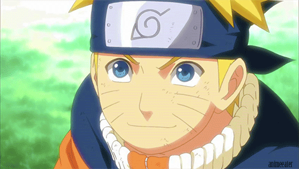
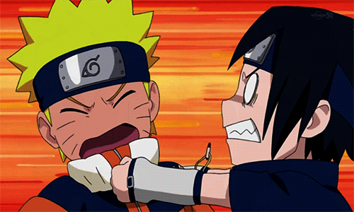
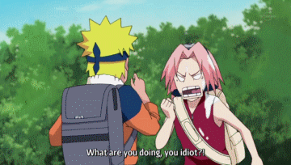
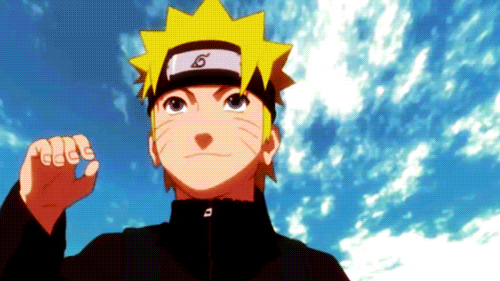
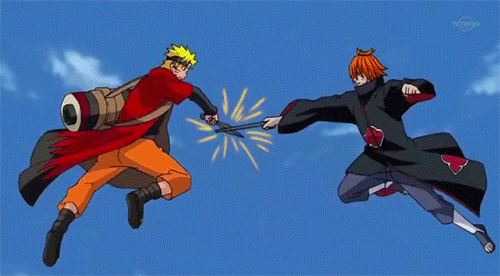
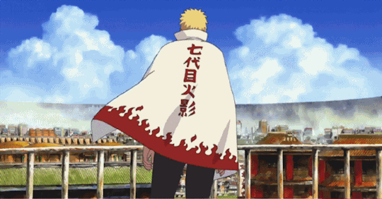

A powerful fox known as the Nine-Tails attacks Konoha, the hidden village in the Land of Fire, one of the Five Great Shinobi Countries in the Ninja World. In response, the leader of Konoha, the Fourth Hokage, seals the fox inside the body of his newborn son, Naruto Uzumaki, at the cost of the father's life, making Naruto a jinchuriki of the beast. As a child, Naruto is isolated from the Konoha community, which regards him as if he was the Nine-Tails.
A decree made by the leader the Third Hokage forbids anyone mentioning the Nine-Tails to anyone else. Twelve years later, renegade ninja Mizuki reveals the truth to Naruto before being defeated by him with the Shadow Clone Jutsu technique, earning the respect of his teacher Iruka Umino. Shortly after, Naruto becomes a ninja and is assigned along with Sasuke Uchiha, whom he often competes against, and Sakura Haruno, on whom he has a crush, to form a three-person team, Team 7, under an experienced sensei, the elite ninja Kakashi Hatake.
Like all the ninja teams from every village, Team 7 is charged with completing missions requested by villagers, ranging from doing chores and being bodyguards to performing assassinations. After several missions, most notably one to the Land of Waves, Kakashi allows Team 7 to participate in a ninja exam allowing them to advance to a higher rank and thus take part in more difficult missions. During the exams, Orochimaru, a wanted criminal, invades Konoha and kills the Third Hokage for revenge. This forces one of the three legendary ninja, Jiraiya, to search with Naruto for Tsunade who has been nominated to become the Fifth Hokage.
During the search, it is revealed that Orochimaru desires to acquire Sasuke due to his powerful genetic heritage, the Sharingan. Believing Orochimaru will be able to give him the strength needed to kill his older brother Itachi (who destroyed their clan), Sasuke eventually joins him after a humiliating defeat by his brother. Tsunade sends a group of ninja, including Naruto, to retrieve Sasuke, but Naruto is unable to bring him back to the village. However, Naruto and Sakura do not give up on Sasuke. Naruto leaves Konoha to train under Jiraiya's tutelage to prepare himself for the next time he encounters Sasuke, while Sakura becomes Tsunade's apprentice.

Part 2: Shippuden
The criminal organization called Akatsuki, of which Itachi is a member, starts kidnapping the hosts of the nine powerful Tailed Beasts, including the Nine-Tails sealed inside of Naruto, to extract them. Several ninjas from Konoha, including Team 7, fight against the Akatsuki members and search for their teammate Sasuke. Akatsuki is successful in capturing seven of those creatures whose hosts are killed in the process, except for Gaara, the host of the One-Tail, whose life is saved by Naruto and his comrades. In the meantime, Sasuke betrays Orochimaru and faces Itachi to take revenge. After Itachi dies in battle, Sasuke learns from the Akatsuki founder Tobi that Itachi was ordered by Konoha's superiors to destroy his clan to prevent a coup.

He accepted with the condition that Sasuke be spared. Saddened by this revelation, Sasuke joins forces with Akatsuki to kill Konoha's superiors who orchestrated the Uchihas' elimination and destroy Konoha to exact revenge. Meanwhile, as several Akatsuki members are defeated by Konoha ninjas, their figurehead leader, Nagato, kills Jiraiya and devastates Konoha. However, Naruto defeats and redeems him, earning the village's resulting respect and admiration. With Nagato's eventual death, Tobi, while disguised as one of Konoha's founding fathers Madara Uchiha, announces that he wants to obtain all nine of the tailed beasts to perform an illusion powerful enough to control all of humanity, supposedly in an effort to create world peace.
The leaders of the five ninja villages refuse to help him and instead join forces to confront Tobi and his allies. This results in a fourth great ninja war between the unified armies of the Five Great Countries (collectively known as the Allied Shinobi Forces) and Akatsuki's forces of zombie-like ninjas. Naruto, and Killer Bee, the host of the Eight-Tails, head for the battlefield refusing to sit back as instructed. During the conflict, it is revealed that Tobi is actually Obito Uchiha, Kakashi's former teammate who was thought to be dead. He was saved by the real Madara and has been working with him ever since. As Sasuke learns the history of Konoha, including the circumstances that led to his clan's downfall, he decides to protect the village and rejoins Naruto and Sakura to stop Madara and Obito's plans, which unleash the Ten-Tails.
However, Madara's body ends up possessed by Kaguya Outsutsuki, an ancient princess who intends to subdue all of mankind. A reformed Obito sacrifices himself to help Team 7 stop her. Once Kaguya is sealed, Madara dies as well, but Sasuke takes advantage of the situation and takes control of all the Tailed Beasts to realize his true goal of ending the current village system. Naruto confronts Sasuke to dissuade him, and after they almost kill each other in a final battle, Sasuke admits defeat and reforms. After the war, Kakashi is chosen to become the Sixth Hokage and pardons Sasuke of his crimes. Years later, Kakashi steps down while Naruto marries Hinata Hyuga and becomes the Seventh Hokage, raising the next generation.
